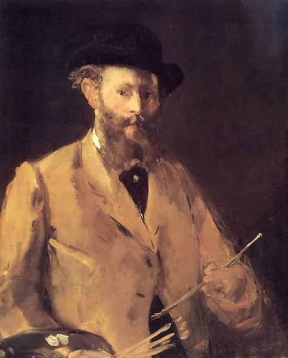
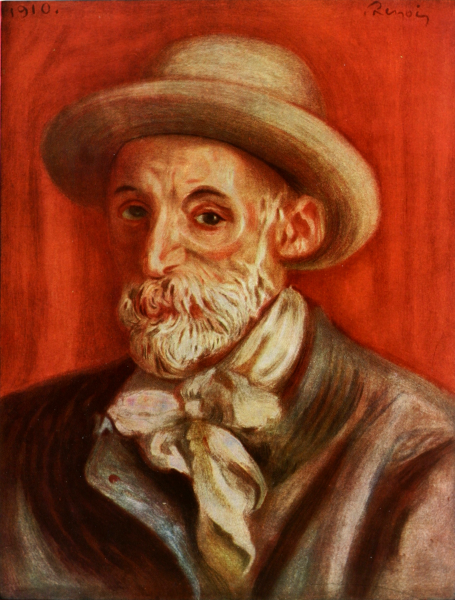
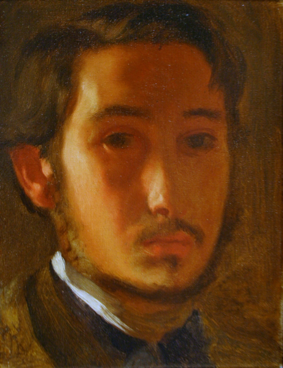
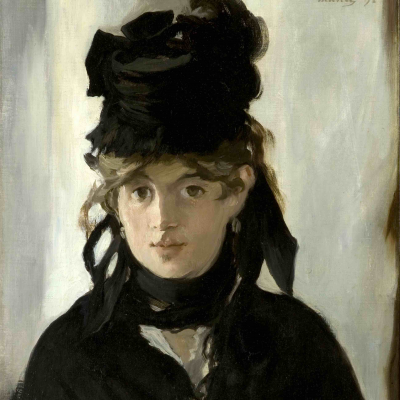
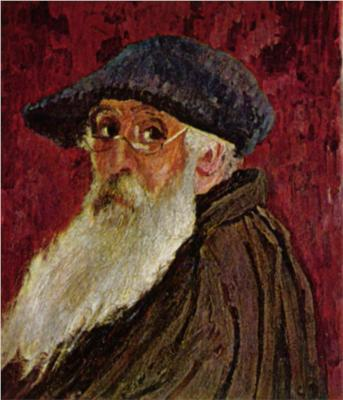
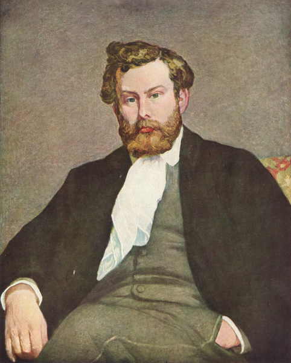
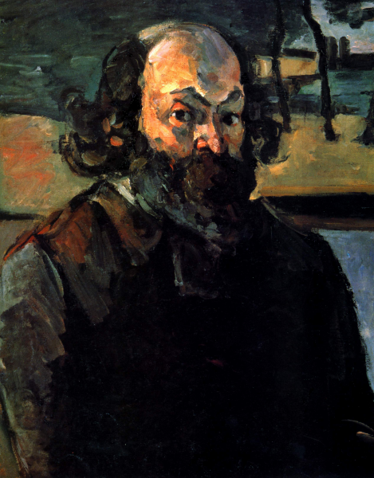

Artistas
Claude Monet: La Percepción Luminosa
"Todo el mundo discute mi arte y pretende comprender, como si fuera necesario comprender, cuando simplemente es necesario amar".
Monet revolucionó el arte al trasladar su caballete al aire libre, enfocándose obsesivamente en luz y el color en un momento específico. Su objetivo principal no era pintar el objeto en sí, sino la sensación fugaz de su atmósfera y su percepción personal del instante. Sus famosas series (almiares, Catedral de Ruan, y Nenúfares) demuestran su dedicación a capturar los efectos sutiles y cambiantes de la luz a lo largo del tiempo.
Más Artistas

Édouard Manet

Pierre-Auguste Renoir

Edgar Degas

Berthe Morisot

Camille Pissarro

Alfred Sisley

Paul Cézanne

Vincent Van Gogh
×

Nacimiento / Muerte:
Nacionalidad: